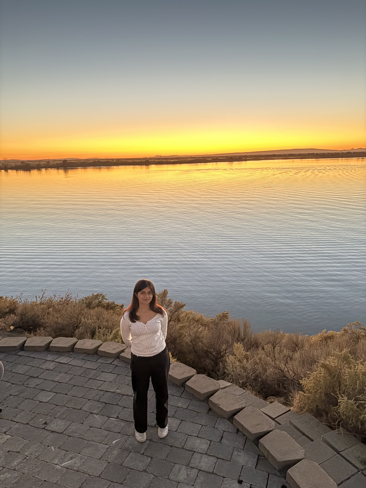

I'm a recent graduate of the University of Washington, where I studied neuroscience and computer science. I'm working towards applying to MD and MSTP programs in 2027.

Roles
Medical Assistant Extern
Aug 2026 — present
Neighborcare Health 45th Street Clinic · Seattle, WA
Undergraduate Research Assistant
Sept 2025 — Aug 2026
Human Photonics Lab, University of Washington · advised by Mark Fauver & Eric Seibel
Undergraduate Research Assistant
Oct 2022 — June 2025
Molecular Information Systems Lab, UW Paul G. Allen School · advised by Gwendolin Roote, Tracy Mallette & Zoe Derauf
Research Intern
Summer 2024
Allen Institute for Brain Science · advised by Matthew Schmitz
Eric J. Seibel, Holle T. Lam, Mark E. Fauver, Sylvia J. Jang, Samuel C. Greene, Sri V. Pinnaka, Sai S. Saiganesh, John N. Villanueva, Allen M. Gown, Bismark F. Mensah, Emma B. Abaidoo, Beatrice Wiafe-Addai, Richard M. Levenson · SPIE Photonics West · Jan 2027
Talks
Spatially Separated Computation in Synthetic Biology: Field Programmable Cellular Arrays
Sri Varshitha Pinnaka · UW Undergraduate Research Symposium · May 2024
Posters
Virtual Hematoxylin and Eosin Colorization for Rapid Point-of-Care Breast Cancer Diagnosis
Sri Varshitha Pinnaka, Eric Seibel, Mark Fauver · UW Undergraduate Research Symposium · May 2026
G-Quadruplex Reporters for Accessible Point of Care Detection
Sri Varshitha Pinnaka, Sophia Contos, Zoe Derauf, Tracy Mallette, Chris Thachuk · UW Undergraduate Research Symposium · May 2025
Deep learning architectures for investigating enhancer differences across regions and evolution
Sri Varshitha Pinnaka, Matthew Schmitz, Nelson Johansen · Allen Institute Intern and Postbac Poster Symposium · Aug 2024
Python · A cross-platform tool for visualizing data acquisition recordings, built for UW undergraduate neuroscience students. Replaces a hard-to-use legacy lab setup; supports NI USB-6003 hardware and a simulated backend for use without physical hardware.
When I'm not working, you can find me spending time with my friends, bouldering at SBP, going on long walks, or reading!